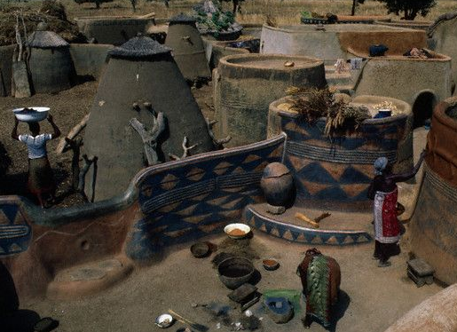
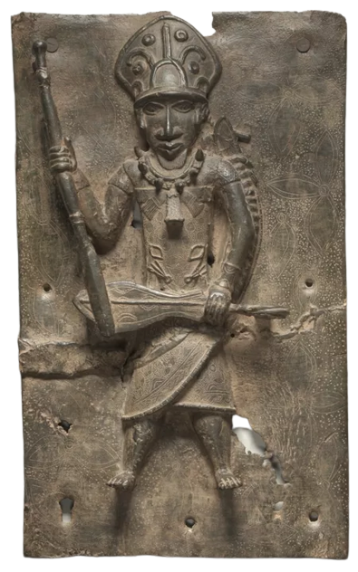

The Ancient West African Experience
From the early Kingdom of Ghana, the ultra rich Empire of Mali, and the massive Songhai, see it all through our time travel vacation! Eat exquisite foods containing some of the best fish you'll ever have. Visit the educational and cultural powerhouse of Timbuktu, sail down the great Niger river, and scale the untapped beauty of the Tibesti Mountains.
There are two types of households in West Africa: nuclear and polygynous. Nuclear households have a husband and a single wife, whereas polygynous households have multiple wives. Often, wives live separate from their husbands in their own houses, giving everyone their fair share of privacy that everyone needs at the end of the day.
Plots of land were worked on communally. Tasks were divided up by gender, having males doing the clearing and females doing the planting. Droughts were common on the savannah, and diseases plagued the animals in the forest. Despite these tough conditions, so much food came to fruition, such as yams, peas, okras, rice, and other grains that happened to make West African cuisine extremely enticing!
Typical possessions of those who lived in West Africa included cots, rugs, and stools. You could also find people with bows, spears, scythes, and iron axes for hunting and farming.
Women had ample freedom in West Africa. In Ancient Ghana, women could serve as government officials. Even enslaved women could hold high government positions in Dahomey. This surprised and impressed many travelers! Ibn Battuta, a Muslim Berber, was shocked to observe all of this in the Islamic country of Mali. Women did not veil themselves before men, although they commit themselves fully to their religion.
There are two main religions in West Africa: Islam and the indigenous religion. Islam was introduced by Arab traders. It is common in the savannah area of West Africa. Due to this religion being popular with merchants and bureaucrats, the religion managed to spread far and wide. Literacy in the arabic language and islamic learning rose with the religion in West Africa. Many mosques were constructed for the purpose of worship.
The Larabanga Mosque is one of the oldest mosques still standing in the region! It's built in the Sudanese architectural style. Very commonly, it is referred to as the "Mecca of West Africa." You can visit this mosque in its prime, back in 1421 when it was founded and built!
Unlike the monotheistic religion of Islam, the indigenous religion was polytheistic and animistic. Beneath an absolute god, many other gods attributed to forces of nature were subordinated by the absolute god. The force of these gods were seen everywhere and in all things.
It was also believed that the spirit of their ancestors could influence their lives. To these ends, ceremonies and rituals were performed to preserve the spirits of the dead. These rituals were a part of everyday life, causing organized and larger events to rarely occur. Due to the believed link between the living and the dead, funerals were also extremely important.
Music, dance, and art are extremely important to religion. Wood carvings and terracotta sculptures known as fetishes were used in funerals, rituals, medical practice, and other things. Wooden masks were also produced that represented the ancestral spirits and divinities. These works of arts may still exist today, such as the famed Benin ivory mask, but a much more immersive experience would certainly be more enjoyable than looking at a museum of replicas! Witness the music played by the indigenous people on their drums, xylophones, and their own mbanzas!
